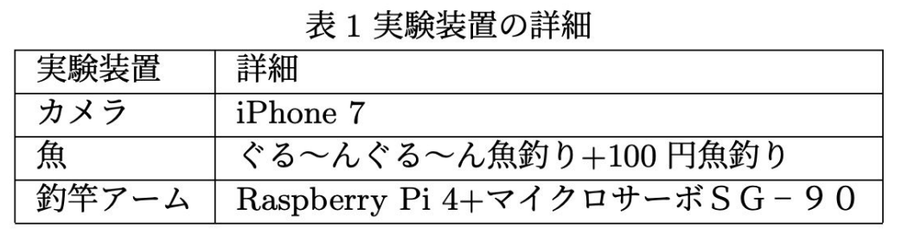
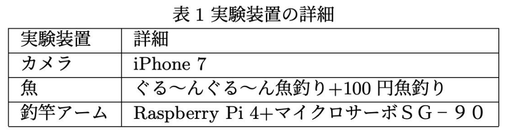

概要
従来のRSSM研究の多くは，シミュレータ上の系列画像を学習データとして用いてきた．実世界のビデオに基づくトレーニングの例としては，DayDreamerのXArmタスクなどがあるが，これらは固定された対象物を想定している．本研究では，周期的な振る舞いをする実世界の物体に対して，周期の長さを変化させた場合のRSSMに基づくモデルの性能を評価する．タスクは，垂直方向に動く単純なアームを使用して，周期的に回転する円盤上で口を開けたおもちゃの魚を釣り上げる方法を学ぶことである．このモデルは，RSSMを用いてカメラで撮影された魚の位置を予測し，魚を捕らえた人に報酬を与えるように設計されている．
実験装置
 

タスクは，「回転する円盤上で口が開いている魚のおもちゃを上下方向で動く簡易なアームを用いて釣り上げる」ことである．
魚の実験装置では，市販されている「ぐる~んぐる~ん魚釣り」というおもちゃを使用している．その魚の口の中に「100円魚釣り」に付属していたマグネットを入れている．
魚の色については「緑色と黄色」の2色を使用している．これは，画像処理によって魚を検出しやすくするためにこの2色を採用している．
釣竿アームではサーボモータ1個をRaspberry Pi 4 Model Bで制御している．制御では，1自由度のアームが周期的に上下運動するようにしている．また，アーム自体は簡易的にダンボールで作成し，アーム部分にマグネットつきのオレンジ釣竿を取り付けている．そして，アーム先端の部分にオレンジ色の補色となる青色の目印を取り付けている．これは，魚の口の中に目印となる点を打って偏差を計測するためである．
カメラはiPhone7を使用して撮影を行った．撮影する画角に「魚」と「釣竿アーム」の両方が入るように調整した．また，背景には白いダンボールを使用して背景の影響で結果に影響を生じないように設定し、撮影時の照明も白色で設定した．
RSSMの実装
Dreamerによる学習
- 観測 (ot)：128×128のRGB画像
- 行動 (at)：アームの上下運動 (1次元)
- 報酬 (rt)：
- ① ランダム
- ② アームと魚の口の距離
- ③ 釣り上がった魚
- ④ (②と③)の組み合わせ
学習の流れ
- 実験装置を用いて2,000ステップ程度のデータを収集し反復、データ長を増やす
- 300ステップ先までの状態を予測
実世界の予測
- 実験装置で撮影して得られた動画を隠れ状態 (ht)に蓄積
- 蓄積された隠れ状態を元に次の状態を予測
- 予測状態をフレームとして復元・可視化
- 予測結果を隠れ状態に蓄積し、再度予測
状態予測を意図するため報酬はランダムとした。
報酬を設計したもとでの実世界の予測
- 報酬1：アーム先端と魚の口のl2距離を報酬とする
- 報酬2：魚が中央部に移動した際に報酬を与える
- 報酬3：報酬1と報酬2を組み合わせて報酬を与える
実験結果

ランダム報酬
距離による報酬
釣り上げると報酬
距離 & 釣り上げると報酬